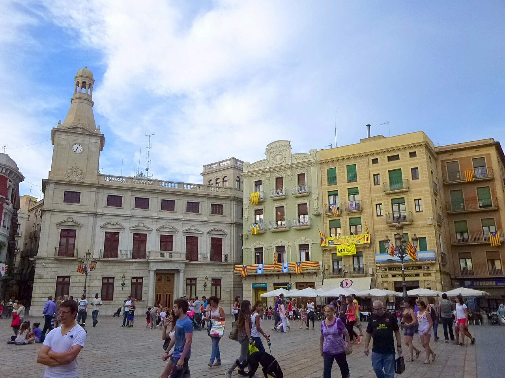
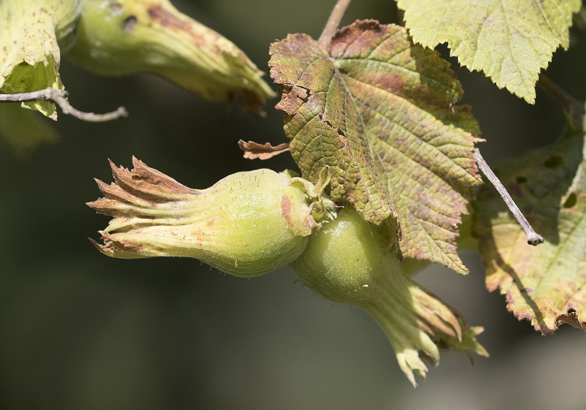

Un mercado de 1309 que todavía decide cuánto vale la cosecha
Cada lunes, en Reus, se reúne una mesa que fija la cotización de la avellana. No es una ceremonia turística: la Llotja de Reus es el único mercado reconocido del Estado que da referencia de precio para este fruto seco, y de esa cifra depende lo que cobra el payés del Baix Camp, del Priorat o de la Terra Alta por la cosecha que acaba de entrar.
Que sea lunes no es casualidad. El 22 de febrero de 1309, Jaume II concedió a Reus la facultad de celebrar mercado cada lunes. Siete siglos después, el día no ha cambiado. Cambió el sitio —de los porches de la plaça del Mercadal a la plaça de Prim, y de allí al edificio de la Llotja acordado en abril de 1972 e inaugurado aquel mismo junio— y cambió el producto principal, pero la costumbre de cerrar tratos de palabra sigue viva.
Cómo el avellano ocupó el sitio de la viña
El cultivo está documentado en la zona de Reus desde el siglo XIII, pero durante siglos fue secundario: el Camp era tierra de viña y de aguardiente. El vuelco llegó en el XIX. En 1862, una asamblea del Institut Agrícola Català de Sant Isidre celebrada en Reus ya aconsejaba plantar avellanos donde antes había cepas, y la filoxera, que arrasó el viñedo catalán a finales de siglo, acabó de decidirlo.
El resultado fue doble. Por un lado, un paisaje nuevo: hileras de avellanos cubriendo el Baix Camp hasta donde alcanzaba la vista. Por otro, una ciudad que se convirtió en el principal centro comercializador de avellana de la península, con la misma red de corredores, almacenes y capital que ya había levantado el negocio del aguardiente y del vermut.


Negreta, paueteta, gironella, morella y culplana
La DOP Avellana de Reus ampara cinco variedades tradicionales —negreta, paueteta, gironella, morella y culplana— cultivadas en seis comarcas: Alt Camp, Baix Camp, Conca de Barberà, Priorat, Tarragonès y Terra Alta. Quedó inscrita en el registro comunitario por el reglamento (CE) 378/1999, de 19 de febrero.
La reina es la negreta, la más plantada con diferencia. Es pequeña y redonda, de piel fina y con mucha grasa, y esa grasa es justo lo que explica su prestigio: al tostarla desarrolla un aroma que las variedades grandes de importación no alcanzan. En una picada o en un romesco, la diferencia se nota en boca antes que en el papel.

Avellana entera y en grano: la negreta es pequeña, redonda y grasa, y por eso aguanta tan bien el tostado. Foto: Ivar Leidus · Wikimedia Commons (CC BY-SA 4.0).
De 35.000 hectáreas a menos de 8.000
En 1985 Cataluña tenía unas 35.000 hectáreas de avellanos. En 2024 quedaban alrededor de 7.800. Solo en los últimos cinco años la superficie ha caído casi un 30%, y la sequía ha llegado a recortar hasta un 70% el rendimiento de algunas fincas. El Camp de Tarragona concentra hoy el 85% de la producción estatal, pero lo hace sobre un territorio que se encoge cada campaña.
La campaña de 2026 se abrió el 27 de agosto con las tablas de precios de la Llotja: entre 25 y 60 céntimos por debajo del año anterior, pese a que la cosecha se preveía mejor que la de 2025. Turquía, que produce la mayor parte de la avellana del mundo, estimaba 468.000 toneladas frente a una media de 550.000, y aun así el precio de salida en Reus bajó. A esa cuenta hay que sumarle el gasóleo, los fitosanitarios y los abonos.
Los precios de lonja han salido inferiores a los del año pasado.
Sergi Martín · responsable nacional de Fruita Seca de Unió de Pagesos, agosto de 2026
Hay un efecto añadido que se conoce poco: cuando la cosecha viene mal, buena parte del fruto del Camp no supera los requisitos de la denominación —calibre, aspecto, sabor— y no puede venderse como Avellana de Reus. El agricultor pierde dos veces. El Departament d'Agricultura ha presentado un Pla de l'avellana 2026-2028 que toca riego, sanidad vegetal, financiación y relevo generacional. Habrá que ver qué queda de él en las fincas.
En la cocinaSin avellana no hay romesco
Picada, romesco, salvitxada · El fruto seco que hace de bisagra
La avellana es el ingrediente que sostiene media cocina catalana sin aparecer nunca en el nombre del plato. En la picada liga y da cuerpo a guisos y suquets. En el romesco y en la salvitxada de los calçots, tostada y machacada con el pan, la ñora y el ajo, aporta la grasa que redondea el vinagre. Y sola, tostada y con sal, es el aperitivo más honesto que se puede poner en una mesa del Camp.
Fuera del plato salado, la avellana del Camp ha alimentado toda una industria dulce: turrón, garrapiñadas, praliné, bombonería y la pastelería de las comarcas tarraconenses, que la usa a diario sin pedir permiso. Cuando en una carta se lee «avellana de Reus», no es un adorno geográfico: es una variedad concreta con una grasa concreta que se comporta de una manera y no de otra.

El romesco, uno de los destinos naturales de la avellana tostada del Camp.
Un ingrediente que pasa por todas nuestras mesas
En las visitas del recorrido gourmet la avellana aparece casi siempre, aunque casi nunca en el nombre del plato: en la picada de un guiso, en el romesco que acompaña un pescado del Serrallo, en un praliné de postre. Merece la pena preguntarlo cuando la carta no lo dice. Saber si esa avellana viene del Camp o de un contenedor es, también, una forma de decidir qué paisaje queremos tener al lado de casa.
Fuentes consultadas: Consell Regulador de la DOP Avellana de Reus, Cambra de Comerç de Reus, Departament d'Agricultura de la Generalitat, Unió de Pagesos, Canal Reus, Mengem (Ara), Viquipèdia (Llotja de Reus, Avellana de Reus). Imágenes: Plaça del Mercadal, 1920 (dominio público); Zarateman (CC0); Zeynel Cebeci e Ivar Leidus (CC BY-SA 4.0), vía Wikimedia Commons.
Newsletter
¿Quieres recibir la próxima crónica antes que nadie?
Crónicas de los restaurantes visitados, vinos recomendados y novedades del Camp de Tarragona. Cada quince días, sin ruido.
Sin spam · Date de baja cuando quieras.
Más historias del Camp de Tarragona
Curiosidades
El romesco · La salsa que nació en el puerto
Pan, ñora, ajo, aceite y avellana tostada. La receta de los pescadores del Serrallo que acabó definiendo la cocina de la provincia.
Leer → Curiosidades
Curiosidades
Reus, París, Londres · La capital mundial del vermut
La misma ciudad, la misma plaza y la misma red de comerciantes que después harían de la avellana un negocio de alcance peninsular.
Leer →